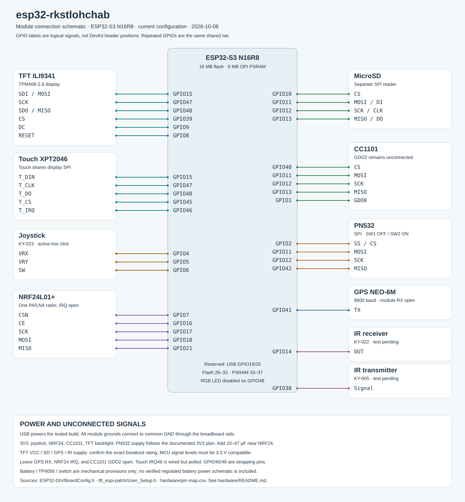

Current N16R8 wiring, firmware and revision-2 enclosure.
When served locally, Markdown links open source documents; use GitHub for rendered Markdown. The 3D viewer needs internet access for its CDN dependencies.
